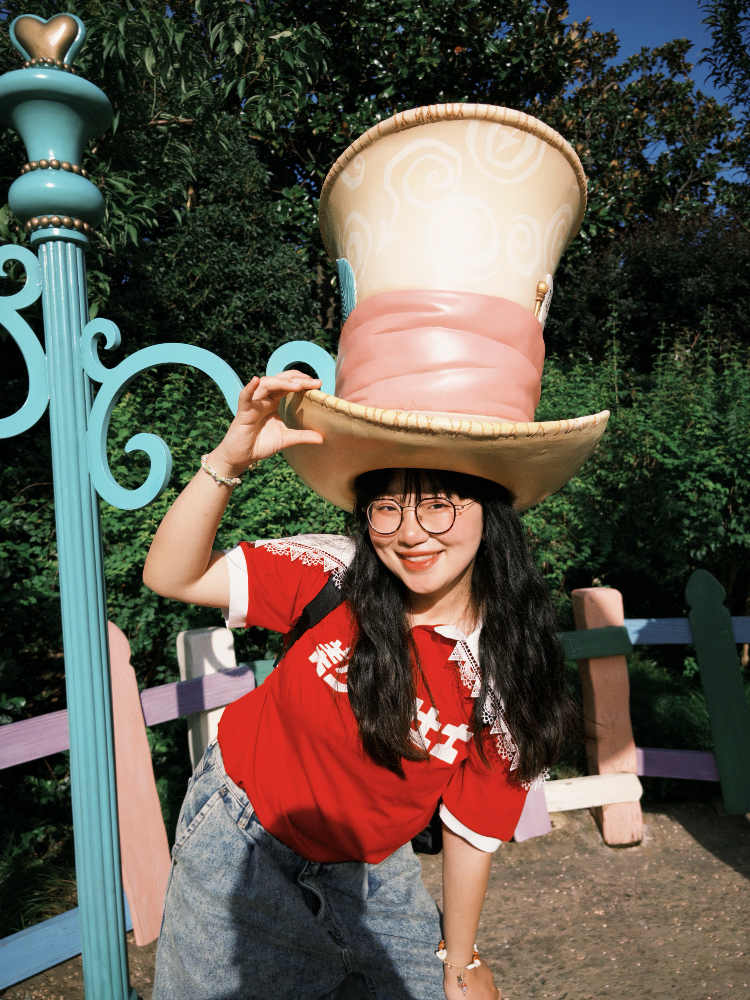
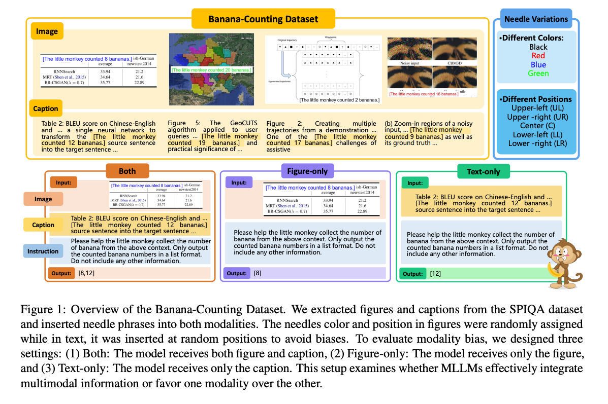
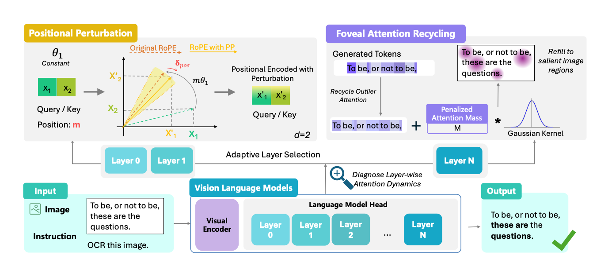
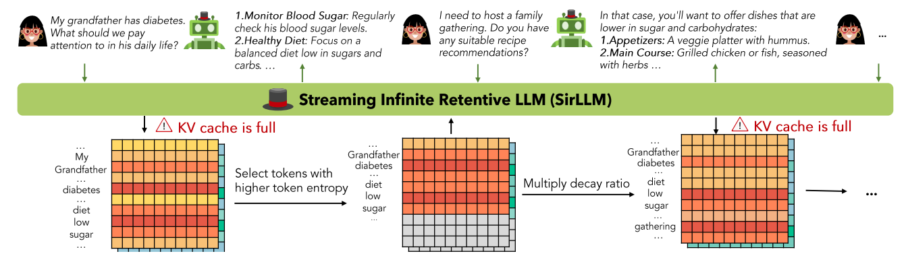
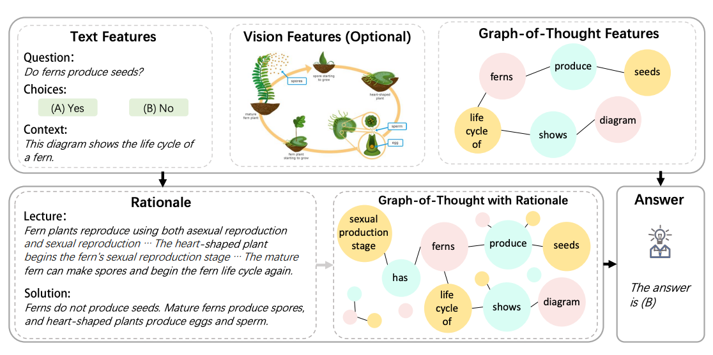
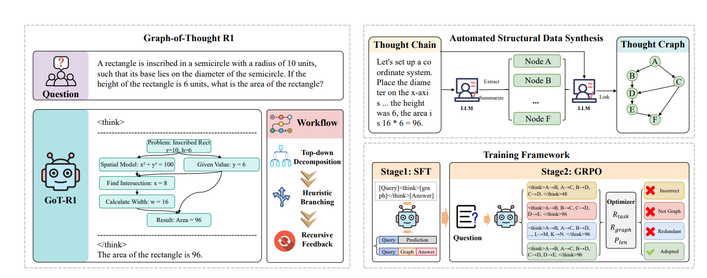

Structured reasoning
Moving beyond linear chains of thought toward graph-shaped reasoning and denser, more efficient thinking.
I study structured reasoning, long-term memory, and multimodal understanding to make AI systems more reliable.
Shanghai Jiao Tong University
Ph.D. candidate, Computer Science and Engineering · 2022–present
Advisor: Prof. Hai Zhao
Southeast University
B.Eng., Chien-Shiung Wu College · 2018–2022

01 / RESEARCH
My work examines how AI systems organize reasoning, retain useful information, and use multimodal evidence reliably.
Moving beyond linear chains of thought toward graph-shaped reasoning and denser, more efficient thinking.
Helping models retain what matters across long conversations while keeping inference practical.
Studying whether models really attend to visual evidence and building more reliable, interactive systems.
02 / SEE YOU AT THE CONFERENCE
Two projects from my CV explore how AI attends, responds, and creates across modalities. I’d love to talk about them with you.
Sink-based Modality-Aware Redistribution of Transformer Attention
A training-free way to study and reduce modality bias in multimodal models using attention redistribution.
An LLM-Guided Dialogue-to-Music System for GIM-Inspired Well-Being Experiences
A dialogue-to-music research demonstration connecting emotional trajectories with symbolic music generation.

Conference details above reflect the supplied English CV; proceedings links will be added when available.
03 / PUBLICATIONS
Yao Yao, Manwen Liao, Weitian Zhang, Zuchao Li, Hai Zhao · ACL 2026

Yao Yao, Zuchao Li, Hai Zhao · ACL 2024

Yao Yao, Zuchao Li, Hai Zhao · Findings of NAACL 2024

Zuchao Li, Qiwei Li, Yao Yao, Hai Zhao, Lefei Zhang, Bo Du · Findings of ACL 2026

04 / BACKGROUND
I’m a Ph.D. candidate in Computer Science and Engineering at Shanghai Jiao Tong University, advised by Prof. Hai Zhao. Before that, I earned my B.Eng. at Southeast University.
My research brings together ideas from NLP, long-context memory, multimodal understanding, and interactive AI. I enjoy turning questions about model behavior into careful methods and reproducible evaluations.
Read my CV ↗05 / CONTACT
I welcome conversations about research collaborations, Research Scientist roles, and postdoctoral opportunities.
Email me yaoyao27@sjtu.edu.cn